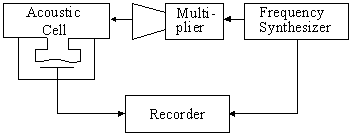

Instruments BWO radiation frequency multipliers BWO radiation frequency multipliers
BWO radiation frequency multiplication
We have developed a series of multipliers based on a planar Schottky diodes (Device 010) for primary sources radiation frequency multiplication. Multipliers are based on a ridged waveguide and/or waveguide-finline-waveguide transition. Single-mode waveguides are used for 35-178 GHz range multipliers (Device 016). Quasioptical construction is employed for higher frequency range (Device 007).
The multipliers were successfully used for extension of frequency range of high resolution microwave spectroscopy either with radio acoustical detector and LHe cooled bolometer up to 1.5 Teraherz [Ref. 3, 4 (1995), Ref. 8 (1999)].
While working on BWO radiation frequency multiplication and having precisely controlled by use of PLL system source of radiation in the range of 1-3 mm we developed universal method of measurement of conversion losses for every separate harmonic with numbers from 2 to 5 produced and radiated by multiplier. The method is based on measurement of absorption of radiation in spectral lines with known intensity and acoustic detection of this absorption.

Block-diagram of radiation frequency multiplication experiments.
The radiation of the source passed through the multiplier and containing both fundamental radiation and harmonics is directed into acoustic gas cell (radio-acoustic detector - Device 004) commonly used in our spectroscopic experiments. The cell is filled by gas with well known spectrum. Observed spectral lines are recorded and analyzed by PC. Following properties of the acoustic detector in addition to its high sensitivity make it crucial element of the method: (i) sensitivity of radio-acoustic detector is independent from frequency range, polarization and space mode of the radiation; (ii) there is no signal from the acoustic detector if there is no absorption in the spectral line of gas inside the cell; (iii) output signal has linear dependence from the radiation power which was absorbed inside the gas cell. Thus a minor power of a few nanowatt at any particular harmonic may be detected in spite of the fact that at the same time hundreds of milliwatt of fundamental power and other harmonics are passing through the cell but do not produce any signal. So spectral lines of the gas are that frequency-selective element which allows us to distinguish one harmonic from another and those from fundamental. The main criterion of identification of observed line is coincidence of its frequency with calculated line frequency taken from the spectrum data base. The use of PLL stabilization of the fundamental radiation source supports the method with so high accuracy of line frequency measurement that the line identification is undoubted. The observed spectral line width is an additional criterion for the line identification. Due to the principal of lines observation the frequency step of radiation scanning through a range is determined by frequency step of fundamental radiation, but for radiation on harmonics the value of the step should be multiplied by corresponding harmonic number. So if higher is the harmonic number then narrower is the linewidth of observed line. The amplitude of observed line is in direct proportion to the line intensity (except the case of too strong absorption which can be estimated beforehand) and to the power of radiation. So comparison of amplitude of observed lines with known intensities allows us to perform quantitative comparison of power in different harmonics. In particular such important characteristic of multiplier as conversion losses can be determined. Dynamic range of such measurements is limited by the acoustic sell sensitivity and in our experiment it was about 55 dB. Accuracy of the method is limited by variation of power of radiation inside the acoustic cell due to parasitic interference when frequency of radiation is changed from one line to another. In our experiments the accuracy of measurements was about 20%. Use of this method for the first time gave possibility in real time to make tuning and adjusting of submillimeter-wave multipliers at every harmonic.
See paper [Ref. 1 (2000)] for more details on the method and its applications.
Example of the multiplier use for high resolution spectroscopy.
Devices
|